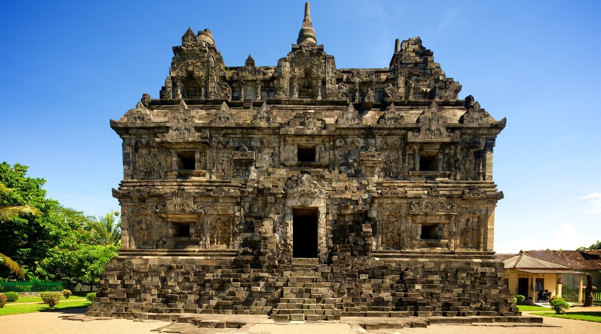
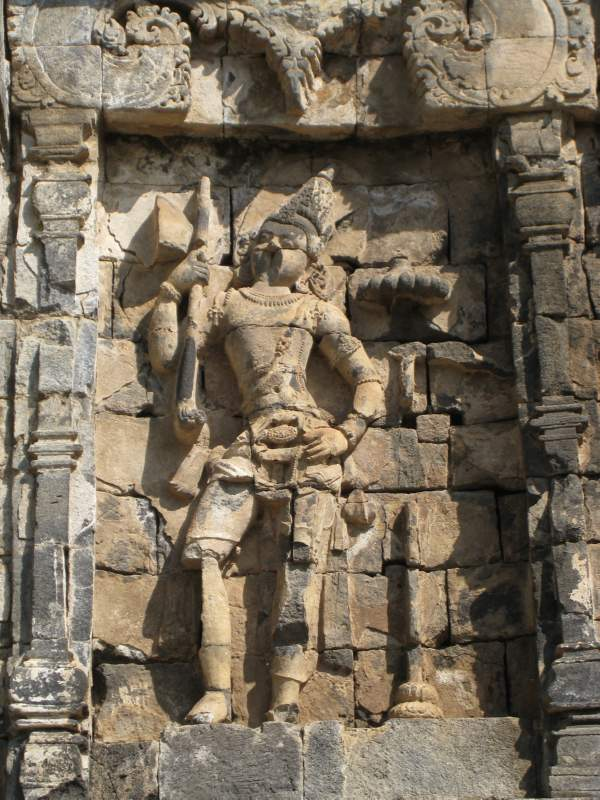
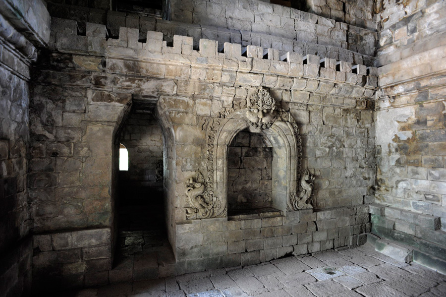

Candi Sari ? Apaan Tuh ? ┐(￣ヘ￣)┌
Candi Sari terletak di sebelah timur laut Candi Kalasan. Secara administratif candi bercorak Budha ini berada di dusun Bendan, desa Tirtomartani, Kecamatan Kalasan, Kabupaten Sleman. Candi ini dibangun sekitar abad 8 masehi yakni hampir bersamaan dengan Candi Kalasan. Hal ini lebih didasarkan pada kesamaan pola hias serta keberadaan Bajralepa.


Arsitekturnya Bagaimana ? (º～º)
Candi Sari memiliki denah empat persegi panjang dengan ukuran 17,3 × 10 m dengan konstruksi bangunan bertingkat.
Bangunan candi bertingkat pada dasarnya telah banyak dijumpai pada relief Candi Borobudur.
Candi terbagi menjadi tiga bilik yang kemungkinan di dalamnya pernah diletakkan arca Budha yang diapit Bodhisatwa.
Lho ada HTM-nya kack ? (ू˃̣̣̣̣̣̣︿˂̣̣̣̣̣̣ ू)
Eits... Santai, Murah kok h3h3 ヾ(＾∇＾)
Sebelum dapat melihat secara langsung Candi Sari dari dekat, wisatawan lokal perlu membayar tiket masuk sebesar Rp 6.000 dan Rp 10.000 bagi wisatawan asing.
Adapun jam kunjungan yang diterapkan di Candi Sari adalah dari pukul 08.00 - 15.00 WIB dari hari Senin - Minggu.
Fun Fact ⊙▽⊙
Pada dinding luar candi dipahatkan relief-relief Bodhisatwa sejumlah 38 buah yakni 8 di sisi timur, 8 di sisi utara, 8 sisi selatan dan 14 di sisi barat.
Relief - relief tersebut digambarkan berdiri dengan memegang bunga teratai.
Pada sisi kanan dan kiri masing - masing jendela dipahatkan makhluk kayangan berwujud kinara dan kinari yakni makhluk bertubuh burung dengan kepala manusia.



.png)